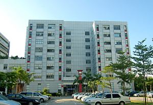

公司介绍

天时通，英文名：TimeLinkInc.,成立于2004年。一直致力于人机互动技术和三维立体全息影像的研发，并同时是拥有自主创新技术专利的高新科技有限公司。天时通先后推出五代TouchWin产品，推出业界首台产品化 62寸Full HD 1080p的全高清多点触控设备，树立多点触控行业的新标杆。天时通成功部署过中国最早也是最大的200寸桌面多人多点触控系统（早于iPhone多点触控6个月上市）。是中国最早推动多点触控产业的公司，拥有中国最早的也是最大的多点触控展厅。公司同时研究制作三维立体全息影像产品：TC480、TC120、TC50。为广告媒体行业又增‘3D全息影像’新媒体。公司也是唯一获得广东省政府，深圳市政府支持的多点触控公司，唯一获得2008年《粤港关键技术计划多人多点触控项目》，以及政府颁发的《自主创新产品证书》的公司。通过年经营，完成了产，学，研一体的模式
公司核心理念：科技闪耀生活！
公司的管理呈现多元结构，成员既有经验丰富的实力人才，也拥有朝气蓬勃的年轻人，他们构筑了天时通的核心力量，在“创新思想、艺术风格、务实精神、积极人生”企业风格的鼓舞下，积极实践天时通“科技闪耀生活”的共同梦想。 天时通公司总部设在深圳，同时在北京中茂维信信息技术有限公司、上海狂龙数码科技有限公司、 天时通（厦门）动漫文化传媒有限公司设立销售公司，建立华北，华东，华南产品销售服务体系，面向全国市场提供产品和服务。
公司理念：科技闪耀生活，TimeLink Inc.核心理念。
TimeLink采纳智慧精华，将无可比拟的创新服务于大众生活；每一天，我们都试图让科技无限魅力与技术之感完美融一。TimeLink始终以领创技术最佳特性为至高梦想，在一个互动的时代，与您一起，让灵感纵容非凡。 TimeLink把握每一次创新机会，为用户创造独特的体验；每一天，我们都将这一理念提升到崭新的高度，因而成就非凡个性TimeLink纵容天下行非凡，每一次完美表现都让技术演变从来没有像现在这么简单。